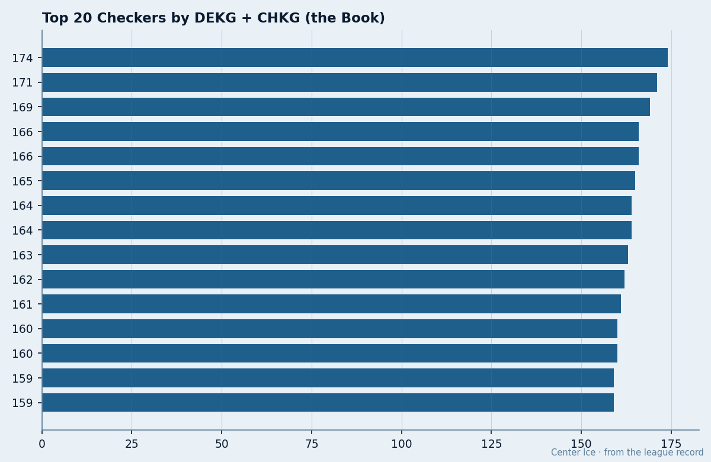

Development Index Watch: The Risers the Scoreboard Has Yet to See
The Bureau's form rating has 10 players up 5 or 6 this season. The points column agrees with five of them.
 Doug ReimerAnalytics editor, ex-video coach · The Slot Report
Doug ReimerAnalytics editor, ex-video coach · The Slot Report
The Bureau's Development Index has 10 players up 5 or 6 on the form rating this season. Five of them are on the scoring chart. Five aren't.
The Index is the Bureau's published measure of current form. A +6 means the player's overall reads six above his base grade in today's edition. It tracks how a player is performing relative to his own standard, independent of the points column. When the form is up 6 and the points are flat, the question is what the Index is capturing that the scoreboard is missing.
The form rating and the points column measure different things
I took the 10 biggest risers on the Development Index, pulled their base grade, form rating, and season production from the Book, and sorted them by the gap between the adjusted grade and the points line.
| Player | Club | Pos | Age | Base | Form | Overall | GP | Points |
|---|---|---|---|---|---|---|---|---|
 Marian Gaborik94 Marian Gaborik94 |  Toronto Maple Leafs Toronto Maple Leafs | RW | 22 | 91 | +6 | 95 | 31 | 42 |
 Mike Cammalleri83 Mike Cammalleri83 |  Los Angeles Kings Los Angeles Kings | RW | 22 | 79 | +6 | 83 | 9 | 10 |
 Vaclav Nedorost72 Vaclav Nedorost72 |  Florida Panthers Florida Panthers | C | 22 | 75 | +6 | 78 | 30 | 4 |
| Jared Aulin75 | Los Angeles Kings | C | 22 | 71 | +6 | 75 | 30 | 6 |
| Pierre-Marc Bouchard77 |  Minnesota Wild Minnesota Wild | C | 20 | 74 | +6 | 75 | 32 | 13 |
| Mike Komisarek74 |  Montreal Canadiens Montreal Canadiens | D | 22 | 77 | +6 | 74 | 30 | 36 |
 Ilya Kovalchuk86 Ilya Kovalchuk86 |  Atlanta Thrashers Atlanta Thrashers | LW | 21 | 89 | +5 | 91 | 30 | 52 |
 Rostislav Klesla80 Rostislav Klesla80 | Toronto Maple Leafs | D | 22 | 78 | +5 | 81 | 31 | 19 |
 Rick Nash79 Rick Nash79 | Toronto Maple Leafs | LW | 20 | 77 | +5 | 80 | 31 | 28 |
 Barret Jackman83 Barret Jackman83 |  St. Louis Blues St. Louis Blues | D | 23 | 80 | +5 | 79 | 29 | 16 |

Three of the ten are producing at the pace their adjusted grade predicts
Gaborik, Kovalchuk, and Komisarek are the clean cases. The Index says they are up, and the production says the same thing. 42 points in 31 games for Gaborik. 52 in 30 for Kovalchuk. 36 in 30 for a 22-year-old defenseman. The form is showing up on the scoreboard, and the adjusted grade matches what you see on the ice.
Nash and Jackman sit in the middle. 28 points in 31 games for Nash is a strong rookie year for a 20-year-old. 16 in 29 for Jackman is solid for a defenseman who is 23. The Index is right, the production is there, just at a lower ceiling.
Cammalleri is the small-sample case. 10 points in 9 games is a fast pace, but the injury ledger shows him with an elbow this season, and 9 games is too thin to read a trend.
The gap between form and production is the question
Then there is the other group. Nedorost is up 6 on the Index, from a base of 75 to 78. He has 4 points in 30 games. Aulin is up 6, from 71 to 75. He has 6 in 30. Bouchard is up 6, from 74 to 75. He has 13 in 32, which is better than the other two but still light for a 20-year-old center.
The Index is a form measure. When the Bureau has Nedorost up 6, it is saying he is playing at a 78 level today. The 4 points in 30 games might be the result of a system that does not feed him, bad linemates, or simple bad luck on shots. The form could be real: better positioning, better reads, better effort on the backcheck. The points have just not caught up.
Or the Index is over-correcting. A +6 on a 22-year-old who has put up 4 points in 30 games is a large jump. The Bureau does not publish the weights behind the form rating, so I cannot check whether the number is being driven by a single input or by a composite. The gap between form and production is wide enough to ask.
The fallers do not generate the same question
 Matt Cooke76 is down 3 on the Index, from 82 to 76. He has 3 points in 31 games.
Matt Cooke76 is down 3 on the Index, from 82 to 76. He has 3 points in 31 games.  Cory Sarich72 is down 3, from 78 to 74. He has 6 in 31 games for a defenseman. In both cases the Index and the scoreboard point in the same direction. When the form drops and the production drops, there is no mystery.
Cory Sarich72 is down 3, from 78 to 74. He has 6 in 31 games for a defenseman. In both cases the Index and the scoreboard point in the same direction. When the form drops and the production drops, there is no mystery.
The mystery is in the risers who are flat on the scoreboard. The fallers confirm that the Index tracks something real. The risers who are not producing are the ones who force the question.
The next Bureau revision is the test
The Index is revised every edition. If Nedorost is genuinely playing at a 78 level, the points should arrive. His base is 75, his form is +6, and his total is 4 in 30. The same test applies to Aulin and Bouchard. Three players, three different bases, all up 6. The next edition of the Index will tell you whether the Bureau stands by the jump or walks it back.